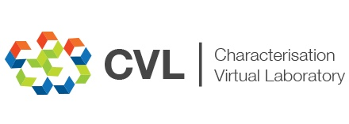

llsm is a set of Scala libraries for working with Lattice Light-Sheet Microscopy (LLSM) data. Features include:
- Read and parse LLSM metadata from raw LLSM data.
- Read LLSM data.
- Deskew LLSM volumes.
- Output LLSM volumes as OME-TIFF or HDF5.
llsm is underpinned by Typelevel and ImageJ/Fiji community libraries including cats, imglib2 and scifio.
Getting Started
llsm is divided into several sub-projects:
coreprocessing libraries with limited dependencies (imglib2,scifio,cats-core).apia Free monad based API/DSLija set of plugins for ImageJ to accomplish some basic tasks.
Note
llsm is currently in pre-release. You should expect some bugs.
License
MIT
Acknowledgements
Development of llsm is supported by:
It forms part of the ANDS Trusted Lattice Light-Sheet Microscopy data project.
